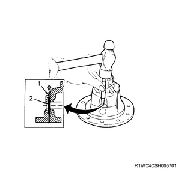

Front differential cage reassembly (All models)
1. Side gear thrust washer installation
1. Install the side gear thrust washer to the side gear.
2. Side gear installation
1. Install the side gear to the differential cage.
3. Pinion gear installation
1. Install the pinion gear to the differential cage.
Note
- While turning 2 pinion gears in the same direction, engage and install them with the side gear.
4. Cross pin installation
1. Install the cross pin to the differential cage.
Note
- Securely install it by aligning the lock pin hole of the cross pin with that of the differential cage.

5. Side gear adjustment
1. Adjust the backlash.
Note
- Measure the backlash of the side gear and pinion gear.
Standard： 0.10 to 0.20 mm { 0.004 to 0.008 in }
Note
- Adjust the thrust washer thickness if the backlash is not at the standard value.
| Thrust washer thicknesses |
| ： 1.00 mm { 0.039 in } |
| ： 1.05 mm { 0.041 in } |
| ： 1.10 mm { 0.043 in } |
6. Lock pin installation
1. Install the lock pin to the differential cage.
Note
- Tap in the lock pin, and secure the differential cage firmly so that it does not come off.

- Crimped section
- Lock pin
7. Front differential ring gear installation
1. Install the ring gear to the differential cage.
Note
- Be sure to replace the ring gear together with the supplied drive pinion.
- Use new bolts when replacing the ring gear.
- Apply LOCTITE 271 or equivalent on bolt from end of thread to the middle of straight portion.
- Tighten the fixing bolts diagonally in the order of numbers as indicated in the diagram.
Tightening torque： 108 N・m { 11.0 kgf・m / 80 lb・ft }